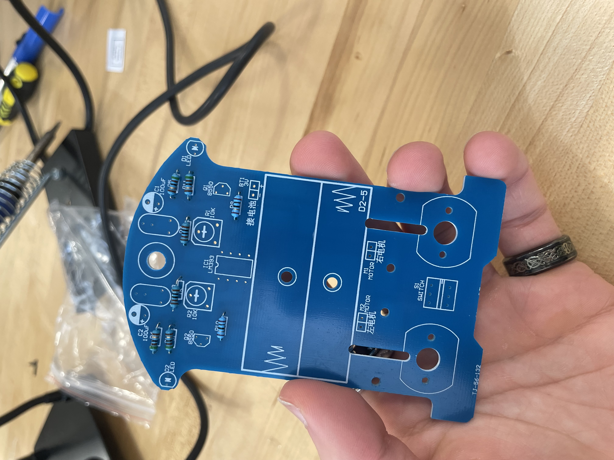
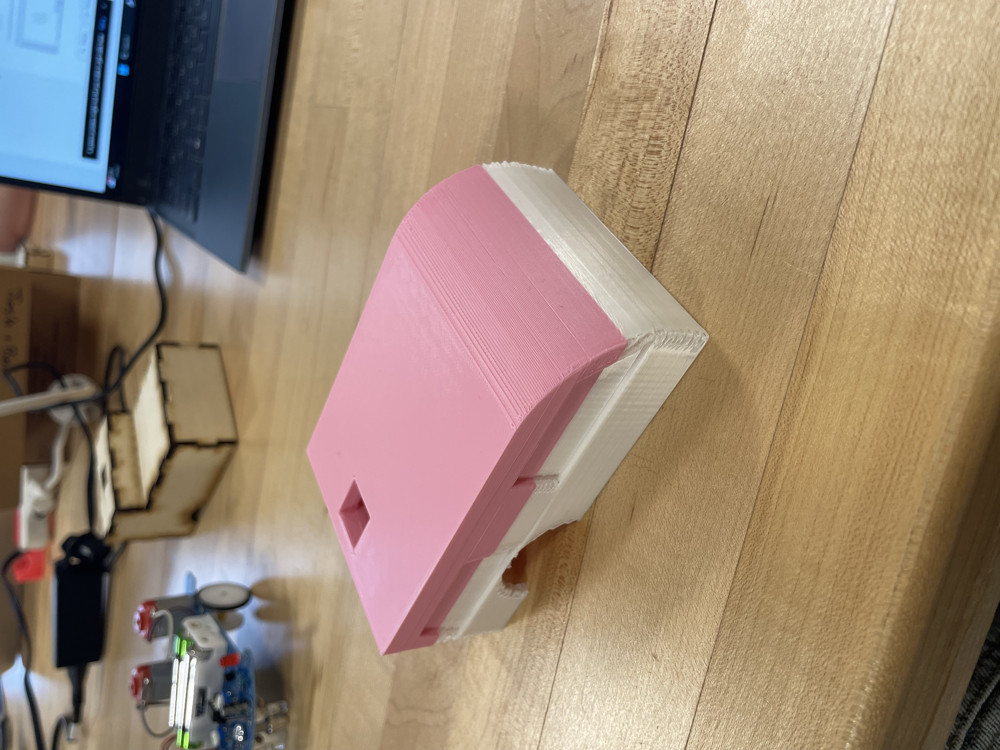
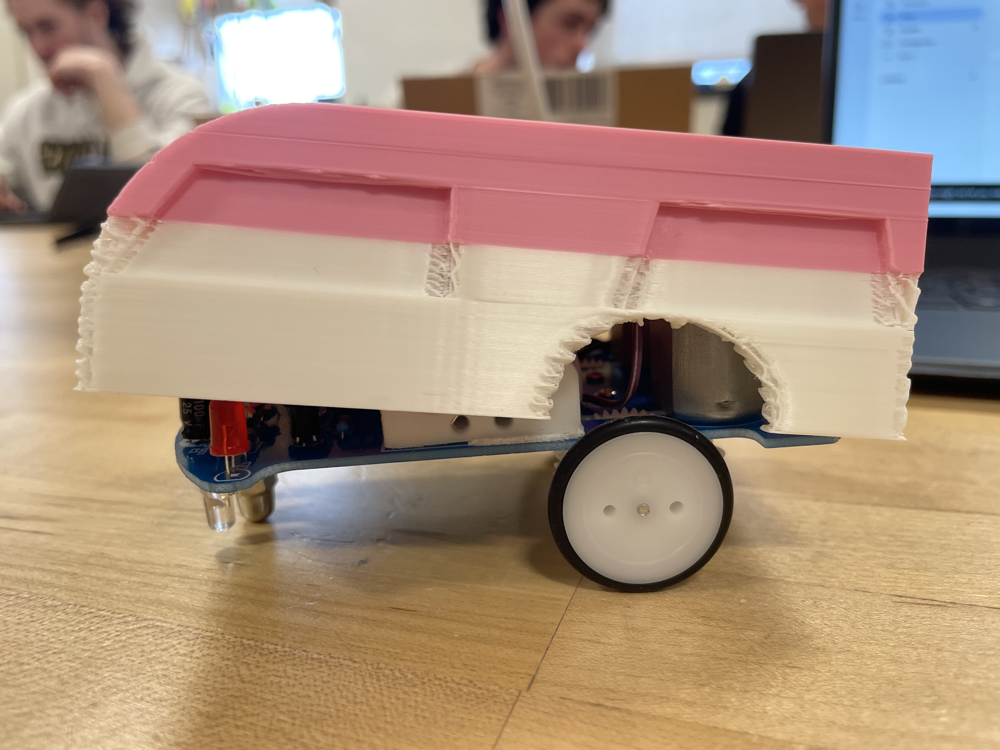
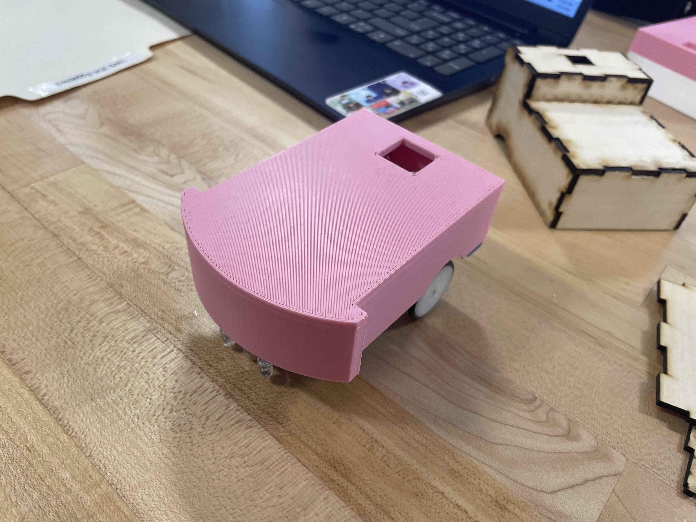
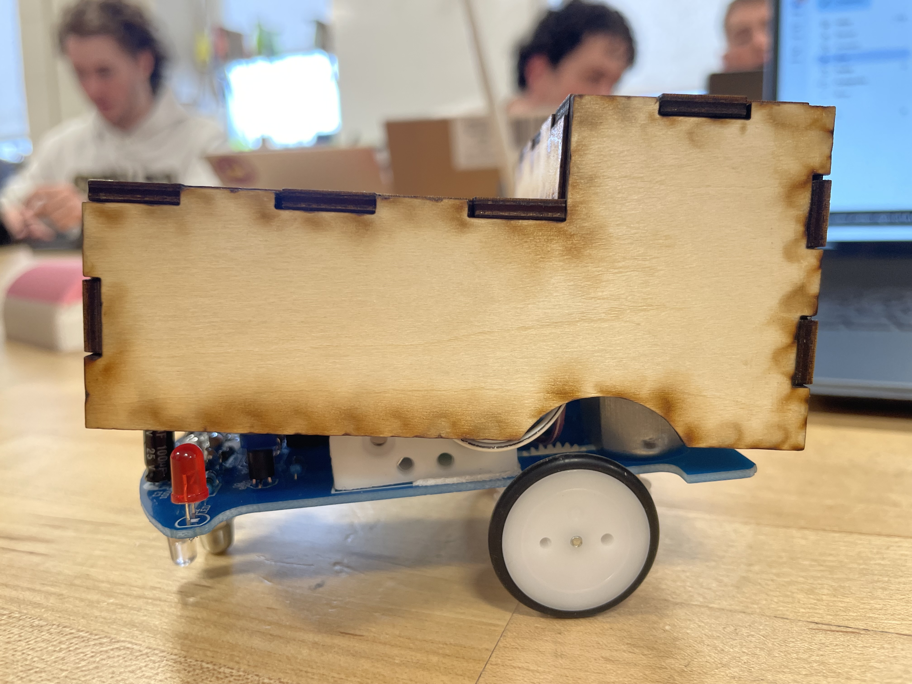
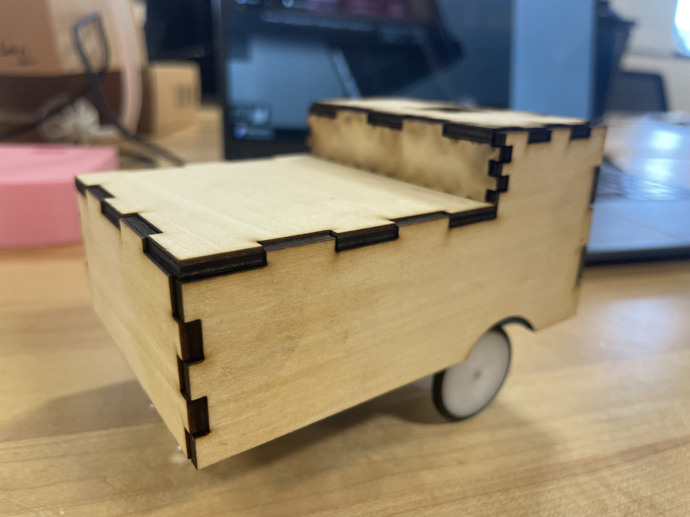
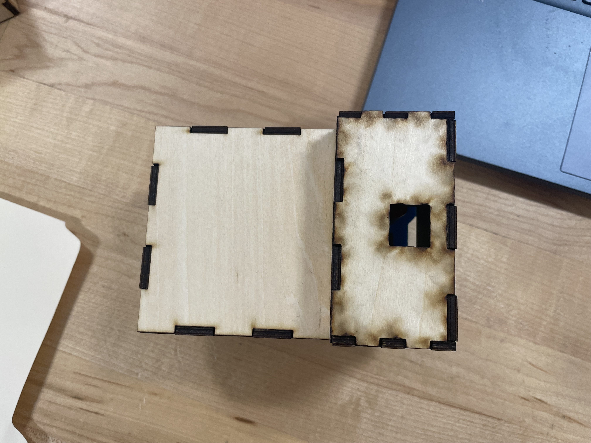

Project 3
Project 3 Overview
The chief goal of Project 3 was to design for fit and function. This project also served as an introduction to both soldering and laser cutting.
First, the subject of the fitted designs, a small robot, had to be put together. This simple autonomously driving robot was built using a prepackaged kit of necessary parts to be soldered together. Two different design processes were the followed the produce a form-fitting chasis for the robot. First, a design was created in Onshape to be 3D printed on a Prusa Mini. A second design was then created in Onshape to be laser cut, using laser joint and autolayout tools. Both of these designs resulted in a poor fit on the first attempt and had to be redesigned to more strictly fit the measurements of the robot and allow additional clearance for the thickness of the material.
Soldering
The self-driving robot that was put together in this project works using light sensors to follow a track. The car has two states: Turing left and turning right. The car enters a the left or right phase depending on whether the respective photoresistor has less resistance, corresponding to the detection of the black runway that the car is meant to follow.
The soldering process began with the mise-en-place of all necessary parts from the kit, making use an assembly mat to neatly organize the workspace. Lead-free tin solder, heated to 700°F, was used alongside brass wire cleaner to accomplish this assembly. The metal present on the board made it incredibly easy to solder, as the iron could heat the metal to draw the solder to the desired location. For the parts on the underside of the board, my partner and I mistakenly believed that we were supposed to solder on the underside of the board, which had no such metal components, rather than on the top of the board, which took a great deal of additional time and effort.
After the robot was successfully constructed, it had a great favoritism to turn right rather than left. The sensitivity of each photoresistor had to be adjusted to ensure that the robot wouldn't get stuck in the right turn state. Through repeated adjustments and trials, an effective balance was eventually found to allow the robot to follow the track as intended.

Soldering Reflection
Prior to soldering, the greatest difficulty was anticipated to be adding later parts to the board after it was already crowded with components. While this was certainly a difficulty, the most difficult aspect of this process by far was attempting to solder on the underside of the board. Without the metal to aid in the flow of solder to the desire point of attachment, the process became much more time consuming, requiring very precise control over both the iron and solder to ensure that the molten metal would solidify at the desired point.
Completed robot in action:
Print 1
To design for fit, a number of dimensions had to be taken, as follows:
70 mm width, 105 mm length, 28 mm wheel diameter, 4 mm wheel height above plate, 32 mm distance from wheel to back of car, and 30 mm motor height.
These dimensions were used to design a chasis, which was then made hollow using boolean subtraction. The chasis was detailed to have some aesthetic elements of a car, including windows and a windshield, as well as a color change in Prusa for additional aesthetic detailing. This design was simply put together using an extrude and a filet, with some additional sketches and extrudes for window detailing and holes for the wheels and power button.

Print 1 in Onshape and in PrusaSlicer:


Print 1 Reflection
This first print ended up having a very poor fit with the robot. This was due to a massive oversight, as the boolean subtraction was done by copying the chasis and shrinking it for use as a subtraction tool, rather than enlarging it and using the original as the subtraction tool, which would have retained the internal dimensions need to fit the robot. In hindsight, this design process was generally much more simple than it should have been, using only a rectanglular sketch as the base for the entire chasis. Although it was made more complicated with detailing, the actual design for fit was far more simple and rudimentary than it should have been. There was also a great deal of stringing under the top of the chasis due to the extreme overhang. Rather than simply fixing the box-like design of this print, we decided to create a more involved design that fit the exact curvature of the robot. This ensured that we would master the skills that this design was intended to teach us, rather than simply putting a vaguely fitting box on the robot.
Final print of first design:

Poor fit of first design:

Print 2
For the second print, a couple of additional dimensions were taken to ensure the more precise fit. These included the length from the tip of the curvature at the front of the board to the thinner main body, 20 mm, the additional width of the curvature at the front of the board, 5 mm on either side, and the distance between the start of the curve and the thinner main body, 5 mm. These dimensions, alongside those taken for the first print, were specifically sketched for this print, making use of the 3 point arc, which is a shape that I didn't know to be available in Onshape prior to the making of this design. The sketch used to cut out the wheel wells was also moved down 10 mm as it was excessively high on the first design.
The first print attempt failed due to printing the chasis right-side up, with the top of the chasis acting as an overhang. This only worked for the first print because of the filleted edge in the design of the first print. It was therefore necessary to turn the print upside down to prevent the roof from caving in during printing.

Sketch of Print 2:

Print 2 in Onshape and in PrusaSlicer:


Print 2 Reflection
While the first print made use of only basic tools, following a flow of sketching a rectangle, extruding it, and filleting some corners for aesthetics. The second design, on the other hand, made use of much more complicated shapes that required a number of shapes in sketching and a carefully designed subtraction sketched onto the chasis in Onshape, rather than simply using the boolean subtraction, which allowed for much more precise and intentional dimensions.
This print, unlike the first, ended up being a near perfect fit.

Laser Cut
Similarly to the 2 prints, a laser cut design was prepared for use in a laser cutter. This cut was done using plywood cut by a carbon laser. Using the same dimensions, a much more simple box-like design was made. This design was made simply using a rectangular sketch and 2 extrusions. To prepare for laser cutting, all sides except the bottom were extruded 1.25 mm into the shape and the original shape was subsequently deleted. This created a series of parts that formed each individual face of the original shape. Using the the Laser Joint tool from FeatureScript, these parts were automatically made to attach to one another via finger joints. These parts were then laid out for laser cutting using FeatureScript's Autolayout tool. The top-down view of this layout was then imported into an Onshape drawing. This drawing was then imported into Lightburn and saved to a USB as a .lbrn2 file. This file was used for cutting on the printer. After cutting, each face was superglued together and dried using accelerator.

Laser Cut in Onshape (original and autolayout):


Laser Cut drawing in Onshape and Lightburn:


Laser Cut Reflection
The first lasercut resulted in a poor fit, as the chasis did not end up being wide enough, as we had forgotten to consider the width of the plywood in the development of the design. The laser cut was redone using a design with an additional 5 mm of width, to account for the width of the plywood on each side of the chasis. However, the scaling of the drawing was slightly altered due to the use of a different drawing template that matched the units we were using. However, when this was sized up in Lightburn, it produced a slightly larger scale. This led the second laser cut to be slightly too long, as well as a little wider than anticipated. This damaged the quality of the fit, as there exist certain angles for which the chasis will fall off the board and partially envelope the robot. However much the existance of these angles damages the quality of the fit, it is still a great improvement over the original.
Original poor fit of laser cut design:

Improved fit of laser cut design:


Final Reflection
This project was certainly the most hands-on thus far. The hands-on elements paired with the collaborative nature of this project made this feel rather similar to the engineering work I'm used to. I worked a summer job as an asset technician from ages 15-18. Working that young at a professional level, I would have been absolutely lost without my team. Our ability to lean on one another as a team became especially important as deadlines drew nearer. While I was fixing the scale of the laser cut, Sandra was reprinting our second design. There simply wouldn't have been enough time in the engineering classroom to put everything together with our repeated failures in the 3D print had I been working alone. This delegation of lower-level responsibilities while working together on important facets of design ensured that we were able to get as much work done as possible while still allowing both of us to engage meaningfully in the material. Engineering work simply doesn't feel right without the collaborative element. While a physicist, for example, may occasionally work alone on independent research, it is exceptionally rare for an engineer to work without a team.
This project served as an incredibly effective introduction to both soldering and laser cutting simultaneously. Both of these techniques were quite foreign to me at the start of this project. Although I was initially somewhat concerned as to how I would learn both over the course of a single project, there was more than enough time alotted for a learning curve for both techniques, even with the time sink of soldering some components on the wrong side of the board. Although both the 3D print and the laser cut were initially very poor fits, we were able to refine the 3D print into a near perfect fit and the laser cut into a decent fit.